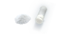
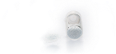

Integração Óssea
Straumann® cerabone
Enxerto de osso bovino natural;
Estabilidade tridimensional a longo prazo;
Seguro e estéril: sinterizado a 1250°C;
100% fase mineral pura;
Superfície rugosa e hidrofílica ideal para adesão celular;
Poros interconectados.
Indicações:
Preservação da crista óssea e processo alveolar;
Aumento do volume ósseo alveolar;
Defeitos de furca (classe I-II)
Defeitos intraósseos (1, 2 e 3 paredes)
Levantamento do seio maxilar

AW-1510
Straumann® cerabone 0,5 ml (cc)
Tamanho do Grânulo: 0,5 - 1,0 mm
AW-1511
Straumann® cerabone 1,0 ml (cc)
Tamanho do Grânulo: 0,5 - 1,0 mm
AW-1512
Straumann® cerabone 2,0 ml (cc)
Tamanho do Grânulo: 0,5 - 1,0 mm
AW-1515
Straumann® cerabone 5,0 ml (cc)
Tamanho do Grânulo: 0,5 - 1,0 mm
AW-1520
Straumann® cerabone 0,5 ml (cc)
Tamanho do Grânulo: 1,0 - 2,0 mm
AW-1521
Straumann® cerabone 1,0 ml (cc)
Tamanho do Grânulo: 1,0 - 2,0 mm
AW-1522
Straumann® cerabone 2,0 ml (cc)
Tamanho do Grânulo: 1,0 - 2,0 mm
AW-1525
Straumann® cerabone 5,0 ml (cc)
Tamanho do Grânulo: 1,0 - 2,0 mm
Regeneração Óssea
Straumann® BoneCeramic | Straumann® maxresorb
Enxerto sintético, reabsorvível;
Estabilidade mecânica e volumétrica;
60% Hidroxiapatita | 10% Beta Tricálcio Fosfato;
Superfície rugosa e hidrofílica ideal para adesão celular;
Poros altamente interconectados
Indicações:
Preservação da crista óssea e processo alveolar;
Aumento do volume ósseo alveolar;
Defeitos de furca (classe I-II)
Defeitos intraósseos (1, 2 e 3 paredes)
Levantamento do seio maxilar
070.198
Straumann® BoneCeramic 0.25g/0,33cc
Tamanho do grão: 400–700 micrômetros
070.199
Straumann® BoneCeramic 0.50g/0,95cc
Tamanho do grão: 500–1000 micrômetros
070.200
Straumann® BoneCeramic 1g/1,9cc
Tamanho do grão: 500–1000 micrômetros

AW-20005
Straumann® maxresorb 0,5 ml (cc)
Tamanho do Grânulo: 0,5 - 1,0 mm
AW-20010
Straumann® maxresorb 1,0 ml (cc)
Tamanho do Grânulo: 0,5 - 1,0 mm
AW-20105
Straumann® maxresorb 0,5 ml (cc)
Tamanho do Grânulo: 0,8 - 1,5 mm
AW-20120
Straumann® maxresorb 2,0 ml (cc)
Tamanho do Grânulo: 0,8 - 1,5 mm